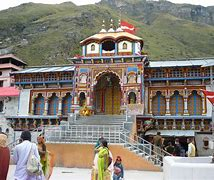

The Badrinath Temple also known as the Badrinarayan Temple, located in Uttarakhand's Badrinath town, is one of the Char Dhams (four important pilgrimages) in the state. There are four pilgrim-destinations namely Yamunotri, Gangotri, Kedarnath, and Badrinath, collectively known as Char Dham. These pilgrimage centres draw large number of pilgrims each year, thus becoming the most important hubs of religious travel in the whole of Northern India.
Badrinath is located at an elevation of around 3,100 m. Located in the Garhwal Himalayas, on the banks of the Alaknanda river, this sacred town lies between Nar and Narayana mountain ranges. The temple is believed to have been established by sage Adi Shankaracharya in the 8th century. With Lord Vishnu as its presiding deity, the temple remains open for six months in a year. In winter it becomes inaccessible due to heavy snowfall.
